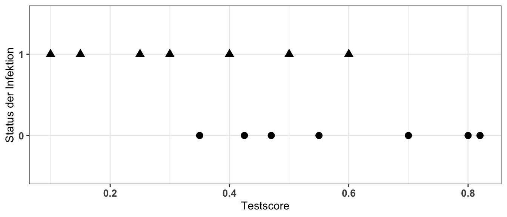
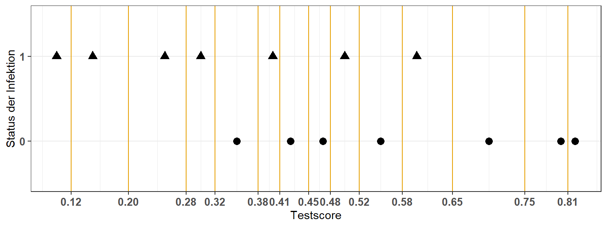
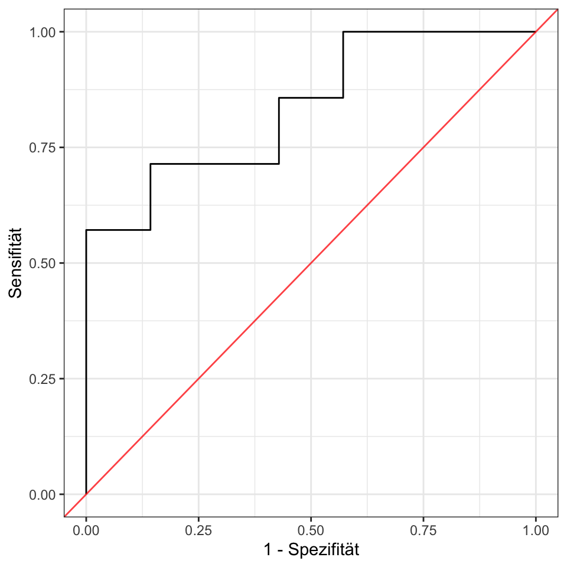

28 Der diagnostische Test
Version vom October 21, 2022 um 15:46:32
Ein diagnostischer Test gibt die Güte einer Klassifizierung wieder. Wir gut wurden Kranke als krank und Gesunde als gesund erkannt? Diese und ähnliche Fragen beantwortet das diagnostische Testen.
In diesem Kapitel wollen wir uns mit dem diagnostischen Test beschäftigen. Eigentlich würde man meinen, dass Diagnostik nun eher in die Medizin gehört. Hauptsächlich wird das diagnostische Testen auch in der Labordiagnostik oder bei der Herstellung eines neuen medizinischen Testes verwendet. Deshalb gibt es hier auch erstmal (Stand Ende 2022) nur einen Ausschnitt aus dem diagnostischen Testen. Wir brauchen aber die Fachbegriffe, wenn wir uns später einmal mit dem maschinellen Lernen oder dem Klasifizieren beschäftigen wollen. Dann brauchen wir die hier verwendeten Fachbegriffe, wie Spezifität, Sensifität, AUC und auch die ROC Abildung.
Bitte schau dir die Aufgaben in den gesammelten Klausurfragen auf GitHub an um eine Idee zu haben, welche Fragen zum Diagnostischen Testen drankommen.
28.1 Genutzte R Pakete für das Kapitel
Wir wollen folgende R Pakete in diesem Kapitel nutzen.
pacman::p_load(tidyverse, magrittr,
pROC, readxl)Am Ende des Kapitels findest du nochmal den gesamten R Code in einem Rutsch zum selber durchführen oder aber kopieren.
28.2 Die Daten für das diagnostische Testen
Die Datentabelle für das diagnostische Testen basiert wie der \(\chi^2\)-Test auf der 2x2 Kreuztabelle oder Verfeldertafel. Es ist dabei unabdingbar, dass oben links in der 2x2 Kreuztabelle immer die \(T^+\) und \(K^+\) Werte stehen. Sonst funktionieren alle Formeln in diesem Kapitel nicht. Wir schauen usn auch immer das Schlechte an. Daher wollen wir immer wissen, ist der Hund krank? Ist der Hund tot? Ist der Hund weggelaufen? Beide Voraussetzung sind wichtig, damit wir mit der 2x2 Kreuztabelle wie in Tabelle 28.1 gezeigt rechnen können.
| Krank | ||||
| \(K^+\) (1) | \(K^-\) (0) | |||
| Test | \(T^+\) (1) | \(TP_{\;\Large a}\) | \(FN_{\;\Large b}\) | \(\mathbf{a+b}\) |
| \(T^-\) (0) | \(FP_{\;\Large c}\) | \(TN_{\;\Large d}\) | \(\mathbf{c+d}\) | |
| \(\mathbf{a+c}\) | \(\mathbf{b+d}\) | \(\mathbf{n}\) |
Wir wollen die Tabelle 28.1 mit einem Beispiel von Tollwut an Hauskatzen in ländlicher Umgebung. Die Katzen haben also Auslauf und können sich auch mit Tollwut infizieren. Wir wollen einen neuen, nicht invasiven Labortesten Tollda darauf überprüfen, wie gut der diagnostische Test Tollwut bei Katzen im Frühstadium erkennt.
Wir haben jetzt folgende Informationen erhalten:
- Der diagnostische Test TollDa ist positiv \(T^+\), wenn Tollwut vorliegt \(K^+\) , in 80% der Fälle.
- Der diagnostische Test TollDa ist positiv \(T^+\), wenn keine Tollwut vorliegt \(K^-\), in 9.5% der Fälle.
- Abschließend haben noch 2% der Katzen in ländlicher Umgebung Tollwut. Wir haben eine Prävalenz der Erkrankung in der betrachteten Population von 2%.
Die Halterin einer Katze möchte nun wissen, wie groß ist dei Wahrscheinlichkeit bei einem positiven Testergebnis, dass meine Katze Tollwut hat. Also die bedingte Wahrscheinlichkeit \(Pr(K^+|T^+)\) oder die Wahrscheinlichkeit krank zu sein gegeben eines positiven Tests.

Abbildung 28.1 visualisert unsere Frage in einem Doppelbaum. Wir haben 10000 Katzen vorliegen. Ja wir waren fleißig und wir können damit besser rechnen. Du siehst aber auch, für die Diagnostik brauchen wir eine Menge Beobachtungen.
Von den 10000 Katzen sind 2% also 200 wirklich mit Tollwut infiziert, also haben den Status \(K^+\). Damit sind 9800 Katzen gesund oder nicht krank und haben den Status \(K^-\). Wir wissen jetzt, dass 80% der \(K^+\) Katzen als postitiv vom Test erkannt werden. Damit werden \(200 \cdot 0.8 = 160\) Katzen \(T^+\). Im Umkehrschluss sind die anderen 40 Katzen dann \(T^-\). Von den 9800 gesunden Katzen werden 9.5% fälsch als krank erkannt, also \(9800 \cdot 0.095 = 931\) Katzen. Wiederum im Umkehrschluss sind dann 8869 richtig als gesunde Tiere erkannt.
Wir können nun den Doppelbaum nach unten ergänzen. Wir haben damit \(1091 = 160 + 931\) positiv getestete Katzen \(T^+\) sowie \(819 = 40 + 8869\) negativ getestete Katzen \(T^-\).
Wie groß ist nun die Wahrscheinlichkeit \(Pr(K^+|T^+)\) oder die Wahrscheinlichkeit krank zu sein gegeben eines positiven Tests? Wir können die Wahrscheinlichkeit \(Pr(K^+|T^+)\) direkt im Baum ablesen. Wir haben 160 kranke und positive Tier. Insgesamt sind 1091 Tiere positiv getestet. Daher Wahrscheinlichkeit krank zu sein gegeben eines positiven Tests \(\tfrac{160}{1091} = 0.147\) oder nur 14%.
Sammeln wir unsere Informationen um die Tabelle 28.1 zu füllen. Wir haben insgesamt \(n = 10000\) Katzen untersucht. In Tabelle 28.2 sehen wir die Ergebnisse unseres Tests auf Tollwut zusammengefasst. Wir haben \(160\) Katzen die Tollwut haben und vom Test als krank erkannt wurden. Dann haben wir \(931\) Katzen, die keine Tollwut hatten und vom Test als positiv erkannt wurden. Darüber hinaus haben wir \(40\) Katzen, die Tollwut haben, aber ein negatives Testergebnis. Sowie \(8869\) gesunde Katzen mit einem negativen Testergebnis.
| Krank | ||||
| \(K^+\) (1) | \(K^-\) (0) | |||
| Test | \(T^+\) (1) | 160 | 931 | \(\mathbf{a+b} = 1091\) |
| \(T^-\) (0) | 40 | 8869 | \(\mathbf{c+d} = 8109\) | |
| \(\mathbf{a+c} = 200\) | \(\mathbf{b+d} = 9800\) | \(\mathbf{n} = 10000\) |
Wie du sehen kannst ist die mittlere Reihe des Doppelbaums nichts anderes als die ausgefüllte 2x2 Kreuztabelle. In Abbildung 28.2 sehen wir die letzte Visualisierung des Zusammenhangs von Testscore auf der x-Achse und der Verteilung der tollwütigen Katzen \(K^+\) und der gesunden Katzen \(K^-\). Links und rechts von der Testenstscheidung werden Katzen falsch klassifiziert. Das heißt, die Katzen werden als krank oder gesund von dem Test erkannt, obwohl die Katzen diesen Status nicht haben. Ein idelr Test würde zwei Verteilungen der kranken und gesunden Tiere hrvorbringen, die sich perfekt separieren lassen. Es gibt anhand des Testscores keine Überlappung der beiden Verteilungen

28.3 Confusion matrix (deu. Fehlermatrix)
Die 2x2 Kreuztabelle wird als Confusion matrix viel auch in der Klassifikation im machinellen Lernen genutzt. Im maschinellen Lernen heißt es dann meist nur anders…
In der Statistik beziehungsweise der Epidemiologie gibt es eine Vielzahl an statistischen Maßzahlen für die 2x2 Kreuztabelle. In der Fachsprache wird die 2x2 Kreuztabelle auch Confusion matrix genannt. Auf der Confusion Matrix können viele Maßzahlen berechnet werden wir konzentrieren uns hier erstmal auf die zwei wichtigsten Maßzahlen, nämlich der Spezifität und der Sensitivität.
In der wissenschaftlichen Fachsprache hat ein diagnostischer Test oder eine Methode, die erkrankte Personen sehr zuverlässig als krank (\(K^+\)) erkennt, eine hohe Sensitivität. Das heißt, sie übersieht kaum erkrankte Personen. Ein Test, der gesunde Personen zuverlässig als gesund (\(K^-\)) einstuft, hat eine hohe Spezifität. Wir können die Spezifität und die Sensitivität auf der 2x2 Kreuztabelle wir folgt berechnen.
\[ \mbox{Sensitivität} = \mbox{sens} = \cfrac{TP}{TP + FN} = \cfrac{160}{160 + 931} = 0.147 \]
\[ \mbox{Spezifität} = \mbox{spec} = \cfrac{TN}{TN + FP} = \cfrac{8869}{8869 + 40} = 0.995 \]
Beide statistischen Maßzahlen benötigen wir im Besonderen bei der Erstellung der Reciever Operator Curve (ROC) im folgenden Abschnitt.
28.4 Receiver Operating Characteristic (ROC)
Die Reciever Operator Curve (ROC) ist die Abbildung wenn es darum geht darzustellen wie gut eine Klassifikation funktioniert hat. Wir werden die Abbildung später im maschinellen Lernen und der Klssifikation wiedertreffen. Da die ROC Kurve aber ursprünglich zum diagnostischen Testen gehört, kommt die ROC Kurve hier auch rein.
28.4.1 Daten für die Receiver Operating Characteristic (ROC)
Schauen wir uns erstmal ein Beispiel für die ROC Kurve an. In Tabelle 28.3 sehen wir Beispieldaten von vierzehn Hunden. Von den vierzehn Hunden haben sieben eine verdeckte Flohinfektion im Anfangsstadium und sieben Hunde sind flohfrei und gesund. Daher haben wir sieben kranke Hunde (\(K^+\) oder Infektionsstatus ist \(1\)) und sieben gesunde Hunde (\(K^-\) oder Infektionsstatus ist \(0\)). Wir testen jeden der Hunde mit dem Flohindikatormittel FleaDa. Das Flohindikatormittel gibt einen Farbwert als test_score zwischen \(0\) und \(1\) wieder. Wir wollen nun herausfinden, ob wir mit dem test_score die vierzehn Hunde korrekt nach ihrem Krankheitszustand klassifizieren können.
| infected | test_score |
|---|---|
| 1 | 0.100 |
| 1 | 0.150 |
| 1 | 0.250 |
| 1 | 0.300 |
| 1 | 0.400 |
| 1 | 0.500 |
| 1 | 0.600 |
| 0 | 0.350 |
| 0 | 0.425 |
| 0 | 0.470 |
| 0 | 0.550 |
| 0 | 0.700 |
| 0 | 0.800 |
| 0 | 0.820 |
Wir sehen die Daten visualisiert in Abbildung 28.3. Auf der \(y\)-Achse ist der binäre Endpunkt \(infected\) und auf der \(x\)-Achse der Testscore des Flohindikators FleaDa.

Die Idee der ROC Kurve ist nun für jeden möglichen Wert des Testscores die Spezifität und Sensitivität zu berechnen. Wir müssen das aber nicht für alle Werte des Testscores machen, sondern nur für die Wert bei denen sich der Status einer Beobachtung anhand des Testscores ändern würde. Klingt ein wenig schräg, schauen wir es uns einmal an. Zuerst brauchen wir jeweils die Grenzen an denen wir für den Testscore eine Klassifikation machen. In Abbildung 28.4 sehen wir die Grenzen als gelbe Linie.

Wir können jetzt für jede gelbe Linie als Threshold des Testscore die Spezifität und die Sensitivität berechen. berechnen Tabelle 28.4 sind die Werte von Spezifität und Sensitivität für jede gelbe Linie ausgegeben. Wenn wir als Entscheidungsgrenze einen Testscore von 0.12 nehmen würden, dann würden wir 1 Hund als krank und 13 als gesund klassifizieren. Wir hätten 7 TN, 1 TP, 6 FN und 0 FP. Aus diesen Zahlen, die eine 2x2 Kreuztabelle entsprechen, können wir dann die Spezifität und die Sensitivität berechnen. Wir berechnen dann die Spezifität und die Sensitivität für jeden Threshold.
| threshold | specificity | sensitivity | tn | tp | fn | fp | |
|---|---|---|---|---|---|---|---|
| 2 | 0.12 | 1.00 | 0.14 | 7 | 1 | 6 | 0 |
| 3 | 0.20 | 1.00 | 0.29 | 7 | 2 | 5 | 0 |
| 4 | 0.28 | 1.00 | 0.43 | 7 | 3 | 4 | 0 |
| 5 | 0.32 | 1.00 | 0.57 | 7 | 4 | 3 | 0 |
| 6 | 0.38 | 0.86 | 0.57 | 6 | 4 | 3 | 1 |
| 7 | 0.41 | 0.86 | 0.71 | 6 | 5 | 2 | 1 |
| 8 | 0.45 | 0.71 | 0.71 | 5 | 5 | 2 | 2 |
| 9 | 0.48 | 0.57 | 0.71 | 4 | 5 | 2 | 3 |
| 10 | 0.52 | 0.57 | 0.86 | 4 | 6 | 1 | 3 |
| 11 | 0.58 | 0.43 | 0.86 | 3 | 6 | 1 | 4 |
| 12 | 0.65 | 0.43 | 1.00 | 3 | 7 | 0 | 4 |
| 13 | 0.75 | 0.29 | 1.00 | 2 | 7 | 0 | 5 |
| 14 | 0.81 | 0.14 | 1.00 | 1 | 7 | 0 | 6 |
Wir können jetzt für jeden Threshold und damit jedes verbundene Spezifität und Sensitivität Paar einen Punkt in einen Plot einzeichnen. Wir lassen damit Stück für Stück die ROC Kurve wachsen.
In der Abbildung 28.5 sehen wir die ROC Kurve mit dem Threshold von 0.32 vorliegen. Wir haben damit 7 TN, 4 TP, 3 FN und 0 FP klassifizierte Beobchtungen. Darauf ergibt sich eine Spezifität von 1 und eine Sensitivität von 0.57. In der ROC Kurve tragen wir auf die \(x\)-Achse die 1 - Spezifitätswerte auf. Damit haben wir eine schön ansteigende Kurve.

In der Abbildung 28.6 istr die ROC Kurve schon nach rechts gewachsen, da wir die ersten falsch positiv (FP) klassifizierten Beobachtungen bei einem Threshold von 0.48 erhalten.

In Abbildung 28.7 sind wir mit einem Threshold von 0.65 schon fast am rechten Rand der Verteilung des Testscores angekommen. Wir haben nur noch 3 richtig negative (TN) Beobachtungen, die jetzt mit steigenden Threshold alle zu falsch positiven (FP) klassifiziert werden.

Die ROC Kurve endet dann oben rechts in der Abbidlung und startet immer unten links. Wir können noch die Fläche unter der ROC Kurve berechnen. Wir nennen diese Fläche unter der Kurve AUC (eng. area under the curce) und wir brauchen diese Maßzahl, wenn wir verschiedene Testscores und die entsprechenden ROC Kurven miteinander vergleichen wollen. Eine AUC von 0.5 bedeutet, dass unser Testscore nicht in der Lage war die kranken von den gesunden Hunden zu trennen.
28.5 Reciever Operator Curve (ROC) in R
Wir berechnen die ROC Kurve nicht per Hand. Das wäre eine sehr große Fleißarbeit für jeden Threshold zwischen den Beobachtungen die jeweilige Spezifität und Sensitivität Paare zu berechnen. Wir nutzen daher das R Paket pROC. Das Pakt erlaubt es uns später auch recht einfach ROC Kurven miteinander zu vergleichen und einen statistischen Test zu rechnen.
Die Daten von den obigen Beispiel sind in der Datei roc_data.xlsx gespeichert und können dann einfach verwendet werden. Die Funktion roc() akzeptiert ein binäres \(y\) wo bei die \(1\) das Schlechte bedeutet und die \(0\) die Abwesenheit von dem Schlechten. Also eben krank oder gesund wie oben beschrieben. Wir wollen dann noch die AUC und die 95% Konfidenzintervalle für das AUC wiedergegeben haben.
roc_tbl <- read_excel("data/roc_data.xlsx")
roc_obj <- roc(infected ~ test_score, roc_tbl, auc = TRUE, ci = TRUE)
roc_obj
Call:
roc.formula(formula = infected ~ test_score, data = roc_tbl, auc = TRUE, ci = TRUE)
Data: test_score in 7 controls (infected 0) > 7 cases (infected 1).
Area under the curve: 0.83673
95% CI: 0.61765-1 (DeLong)Wir sehen, dass wir eine AUC von 0.837 haben, was auf eine gute Trennschärfe des Tests hindeutet. Wäre die AUC näher an 0.5 dann würden wir sagen, dass der Test die kranken Hunde nicht von den gesunden Hunden unterscheiden kann.
Im nächsten Schritt extrahieren wir noch alle wichtigen Informationen aus dem Objekt roc_obj damit wir die ROC Kurve in ggplot zeichnen können. Das Paket pROC hat auch eine eigne Plotfunktion. Es gibt eine Reihe on Screenshots vom pROC Paket, wo du noch andere Möglichkeiten siehst. Einfach mal ausprobieren.
roc_res_tbl <- roc_obj %>%
coords(ret = "all") %>%
select(specificity, sensitivity)Das Objekt roc_obj nutzen wir jetzt um die ROC Kurve einmal darzustellen. Achte drauf, dass auf der \(x\)-Achse die 1-Spezifität Werte stehen. Wir erhalten die ROC Kurve wie in Abbildung 28.8 dargestellt. Wie zeichnen noch die Diagonale ein. Wenn die ROC nahe an der Diagonalen verläuft, dann ist der Testscore nicht in der Lage die Kranken von den Gesunden zu trennen. Eine perfekte ROC Kurve läuft senkrecht nach oben und dann waagerecht nach rechts und es ergebit sich eine AUC von 1.
ggplot(roc_res_tbl, aes(1-specificity, sensitivity)) +
geom_path() +
geom_abline(intercept = 0, slope = 1, alpha = 0.75, color = "red") +
theme_bw() +
labs(x = "1 - Spezifität", y = "Sensitivität")
In späteren Kapiteln zur Klassifikation werden wir auch verschiedene ROC Kurven zusammen darstellen und miteinander Vergleichen. Dazu nutzen wir dann auch die ROC Kurve und die Möglichkeit auch einen roc.test() zu rechnen. Mehr dazu gibt es soweit erstmal auf der Hilfeseite des R Paketes pROC mit vielen Screenshots vom pROC Paket. Für dieses Kapitel soll die Darstellung einer ROC Kurve genügen.